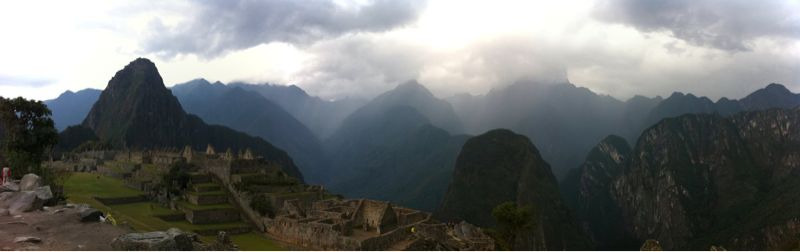

Sat, 02 Oct 2010 21:37:53 · Peru · Machu Pichu · Travel · City · SouthAmerica
view of huayna picchu or wayna picchu quechua

View of Huayna Picchu or Wayna Picchu (Quechua: “Young Peak”), Machu Pichu, Peru.
~Woke up at 3.30am to catch the first bus from Aguas Calientes to Machu Pichu and be among the limited numbers of people allowed to climb the peak of Machu Pichu before sunrise.